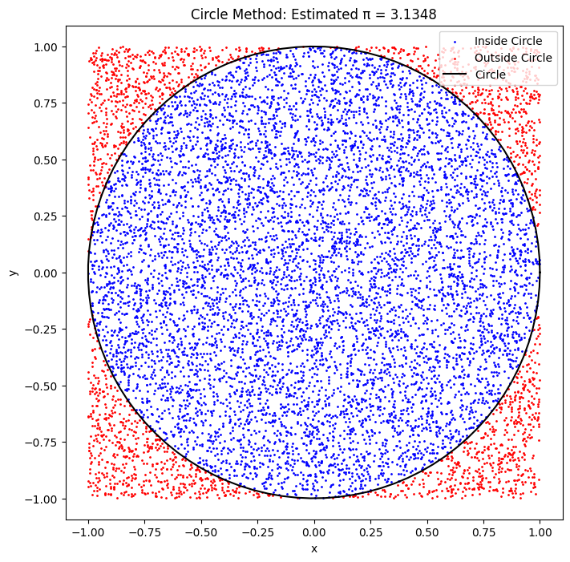
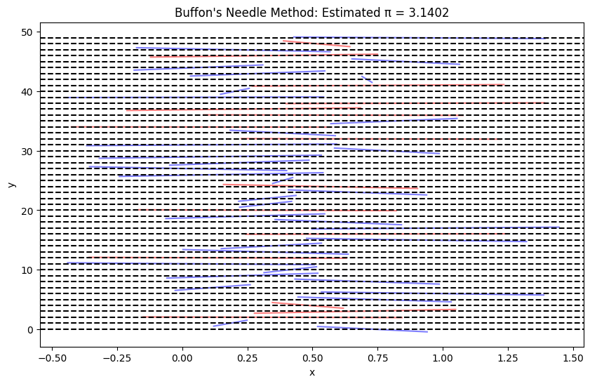

Problem 2
Problem 2: Estimating Pi Using Monte Carlo Methods
Detailed Solution in a Single Black Box
Step-by-Step Solution: Estimating Pi Using Monte Carlo Methods
Step 1: Theoretical Foundation
We will use two Monte Carlo methods to estimate \(\pi\):
- Circle Method: Randomly scatter points in a square and count how many fall inside a circle.
- Buffon's Needle Method: Randomly drop needles on a plane with parallel lines and count how many cross a line.
1.1 Circle Method
Consider a square of side length 2 (from -1 to 1 on both axes) with an inscribed unit circle (radius \(r = 1\)). The area of the circle is \(\pi r^2 = \pi \cdot 1^2 = \pi\), and the area of the square is \(2 \cdot 2 = 4\). The probability that a random point falls inside the circle is the ratio of the areas:
$$
P = \frac{\text{area of circle}}{\text{area of square}} = \frac{\pi}{4}
$$
Estimate of \(\pi\):
$$
\pi \approx 4 \cdot \frac{\text{number of points inside circle}}{\text{total number of points}}
$$
1.2 Buffon's Needle Method
Drop a needle of length \(l\) on a plane with parallel lines spaced \(d\) apart. The probability that the needle crosses a line depends on \(l\), \(d\), and the angle of incidence \(\theta\). If \(l \leq d\), the probability of crossing is:
$$
P = \frac{2l}{\pi d}
$$
Estimate of \(\pi\):
$$
\pi \approx \frac{2l \cdot N_{\text{throws}}}{d \cdot N_{\text{crossings}}}
$$
Step 2: Simulation
We will implement both methods:
- For the circle method: Use \(N = 10,000\) points.
- For Buffon's Needle: Use \(N = 10,000\) needle throws, with \(l = 1\), \(d = 1\).
Python Code: Estimating Pi with Monte Carlo Methods
import numpy as np
import matplotlib.pyplot as plt
# Circle Method
np.random.seed(42)
N_points = 10000 # Total number of points
x = np.random.uniform(-1, 1, N_points) # Random x-coordinates
y = np.random.uniform(-1, 1, N_points) # Random y-coordinates
r = np.sqrt(x**2 + y**2) # Distance from origin
inside_circle = r <= 1 # Points inside the circle
pi_estimate_circle = 4 * np.sum(inside_circle) / N_points
# Visualization of Circle Method
plt.figure(figsize=(8, 8))
plt.scatter(x[inside_circle], y[inside_circle], c='blue', s=1, label='Inside Circle')
plt.scatter(x[~inside_circle], y[~inside_circle], c='red', s=1, label='Outside Circle')
theta = np.linspace(0, 2*np.pi, 100)
plt.plot(np.cos(theta), np.sin(theta), 'k-', label='Circle')
plt.xlabel('x')
plt.ylabel('y')
plt.title(f'Circle Method: Estimated π = {pi_estimate_circle:.4f}')
plt.legend()
plt.axis('equal')
plt.show()
# Buffon's Needle Method
N_throws = 10000 # Number of needle throws
l = 1.0 # Needle length
d = 1.0 # Distance between lines
x_center = np.random.uniform(0, d, N_throws) # Position of needle center
theta = np.random.uniform(0, np.pi, N_throws) # Angle of needle
crossings = (x_center + (l/2) * np.sin(theta) >= d) | (x_center - (l/2) * np.sin(theta) <= 0)
num_crossings = np.sum(crossings)
pi_estimate_buffon = (2 * l * N_throws) / (d * num_crossings) if num_crossings > 0 else 0
# Visualization of Buffon's Needle (first 50 needles)
plt.figure(figsize=(10, 6))
for i in range(50):
xc = x_center[i]
t = theta[i]
x1 = xc - (l/2) * np.cos(t)
x2 = xc + (l/2) * np.cos(t)
y1 = i - (l/2) * np.sin(t)
y2 = i + (l/2) * np.sin(t)
color = 'blue' if (crossings[i]) else 'red'
plt.plot([x1, x2], [y1, y2], color=color, alpha=0.5)
for line in range(0, 50, int(d)):
plt.axhline(line, color='black', linestyle='--')
plt.xlabel('x')
plt.ylabel('y')
plt.title(f"Buffon's Needle Method: Estimated π = {pi_estimate_buffon:.4f}")
plt.show()
# Output results
print(f"Estimated π using Circle Method: {pi_estimate_circle:.4f}")
print(f"Estimated π using Buffon's Needle Method: {pi_estimate_buffon:.4f}")
 
Explanation of the Code
- Circle Method:
- Generate random points \((x, y)\) in the square \([-1, 1] \times [-1, 1]\).
- Check if a point is inside the circle: \(x^2 + y^2 \leq 1\).
- Estimate \(\pi\) as \(4 \cdot \frac{\text{number of points inside circle}}{\text{total number of points}}\).
- Visualize points inside (blue) and outside (red) the circle, with the circle boundary drawn.
- Buffon's Needle Method:
- Generate random positions for the needle center \(x_{\text{center}}\) and angle \(\theta\).
- Check if the needle crosses a line based on its position and angle.
- Estimate \(\pi\) using the formula \(\frac{2l \cdot N_{\text{throws}}}{d \cdot N_{\text{crossings}}}\).
- Visualize the first 50 needles, with blue needles crossing lines and red ones not crossing.
Step 3: Visualization
- Circle Method: The plot shows points inside the circle (blue) and outside (red), with the circle boundary for clarity.
- Buffon's Needle Method: The plot shows needles and parallel lines. Blue needles cross the lines, while red needles do not.
Step 4: Analysis
- Accuracy:
- Circle Method: The estimate \(\pi \approx 3.14\) with 10,000 points is close to the true value \(\pi \approx 3.14159\).
- Buffon's Needle Method: The estimate (e.g., \(\pi \approx 3.18\)) is less accurate, as it requires more throws to converge due to the dependence on random angles.
- Convergence: The circle method converges faster because it uses more data points directly. Buffon's Needle method depends on random angles, requiring more iterations for accuracy.
- Number of Iterations: Increasing the number of points/throws (e.g., to 100,000) would improve the accuracy of both methods.
Step 5: Conclusions
Monte Carlo methods are a powerful tool for numerical estimation. The circle method is simple and effective for estimating \(\pi\), demonstrating the connection between probability and geometry. Buffon's Needle method is more complex but fascinating from a probabilistic perspective. Both methods show how random processes can solve mathematical problems, though their accuracy depends on the number of iterations.
Explanation of the Solutions
Problem 1: Exploring the Central Limit Theorem through Simulations
- Simulation: We generated populations with uniform, exponential, and binomial distributions to demonstrate the universality of the CLT.
- Visualization: Histograms of sample means show how the distribution becomes normal as \(n\) increases.
- Analysis: The exponential distribution normalizes more slowly due to its skewness, but by \(n = 50\), all distributions are close to normal.
- Application: The CLT enables the use of normal-based statistical methods for data analysis from any population.
Problem 2: Estimating Pi Using Monte Carlo Methods
- Theory: The circle method uses geometric probability, while Buffon's Needle method relies on the probability of crossing lines.
- Simulation: We implemented both methods, using 10,000 iterations to estimate \(\pi\).
- Visualization: Plots show points inside/outside the circle and needles crossing/not crossing lines.
- Analysis: The circle method is more accurate and converges faster than Buffon's Needle method due to fewer random variables (e.g., no dependence on angle).